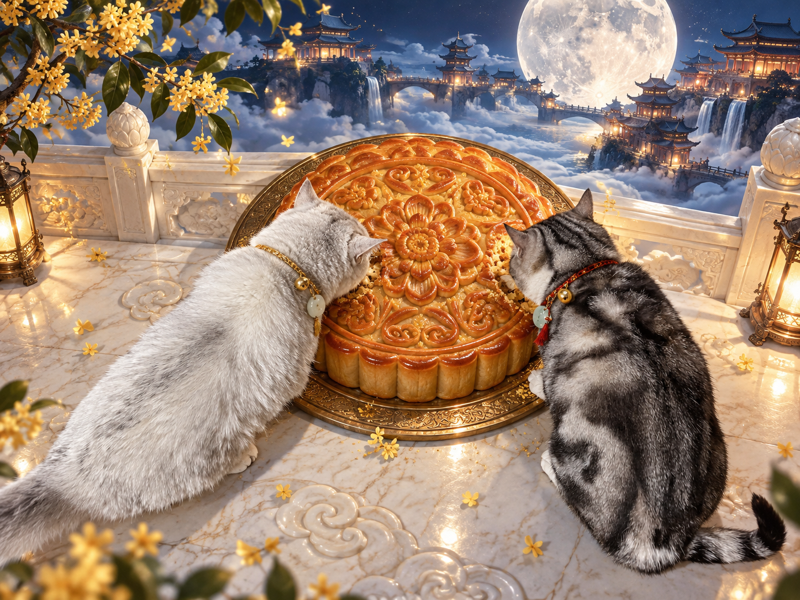

BEFORE / AFTER
中秋主题猫猫写真 09
左边是我拍的原图，右边是 AI 生成的月宫版本。
也想带自家猫咪去月宫？选喜欢的场景，上传猫咪照片作参考，再复制这张卡片里的完整提示词。
图片是 AI 创作，效果会随参考照片而变化。点击照片可以放大看细节。

芒果 × 葡萄 / 中秋写真
普通照片 + 一段提示词，
把猫咪送进月宫。
从家里的随手拍出发，给它们换上一片桂花、云海和月光。
BEFORE / AFTER
左边是我拍的原图，右边是 AI 生成的月宫版本。
也想带自家猫咪去月宫？选喜欢的场景，上传猫咪照片作参考，再复制这张卡片里的完整提示词。
图片是 AI 创作，效果会随参考照片而变化。点击照片可以放大看细节。